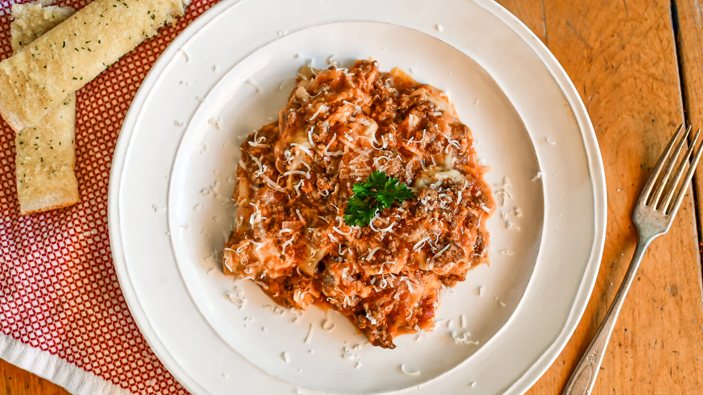

Home
Lasagna Recipe

Description
An easy lasagna recipe that saves me lots of time. This dish satisfies everyone in the family. Try it tonight!
Making perfect homemade lasagna doesn’t have to be tedious. This top-rated easy lasagna recipe comes together quickly with a relatively short ingredient list.
Ingredients
- Beef: This easy lasagna starts with ground beef. You can use ground turkey for a lighter option.
- Spaghetti sauce: Use store-bought or homemade spaghetti sauce.
- Cheeses: You’ll need cottage cheese, mozzarella, and Parmesan.
- Eggs: Eggs help bind the cheese mixture together. Plus, they lend moisture and richness.
- Seasonings: Season the easy lasagna with dried parsley, salt, and black pepper.
- Lasagna noodles: Of course, you’ll need lasagna noodles!
- Water: Pour ½ cup of water around the edges of the baking dish before baking.
Steps
You’ll find the full, step-by-step recipe below — but here’s a brief overview of what you can expect when you make homemade easy lasagna:
- Cook and drain the ground beef, then stir in the spaghetti sauce and simmer.
- Combine the cottage cheese, 2 cups of mozzarella, eggs, half of the Parmesan, and seasonings.
- Assemble the lasagna according to the detailed recipe.
- Bake, covered, for 45 minutes.
- Uncover and continue baking for 10 minutes.